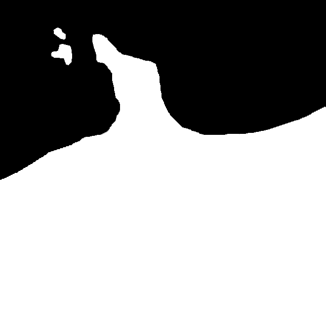

This week marked the second week of our project task. At the beginning of the week, we allocated the
requirements for each person's terrain and determined its placement on the grid. We made these decisions
through a bidding process, where each person received 100 fake dollars. My progress this week involved
starting to develop the basic shape of my island.
After the bidding, I ended up with these requirements:
- Peninsula
- Trail
- Mesa
- Lake
- Dry Forest
- Blowout
- Sand Dunes
When bidding for items, I tried to maintain a theme. By staying within the theme, I could make the item
look nicer and easier to create.
My approach to this task was to create the base shape of the terrain before I did anything else. I found
this challenging, as I had not previously made a specific shape for an island. My first attempt at
creating the land structure was with the shape tool within a World Machine, but I soon found that its
creation was limited.
I continued experimenting to determine how to create the basic shape until I came up with the idea of
making my own height map in Photoshop. The way World Machine terrain operates is based on a PNG height
map. It’s quite simple: the whiter the pixel in the image, the higher it will be displayed, and the
darker the pixel, the lower it will be. using this, I could draw a simple height map to create the
shape, and then I can use a world machine to make it look like actual terrain.

The image above showcases my simple drawing of a height map, which outlines what I aimed to achieve.
However, when I attempted to create this height map, I realized that my artistic skills weren’t the
best, especially when using a trackpad. To address this issue, I searched Google Maps for a peninsula
along the coast of Australia that I liked and thought would work well for my project. While I never
found the perfect peninsula, I did come across a nice one. I took a screenshot of it and imported it
into Photoshop. At that point, I couldn’t use the screenshot directly, so I converted it to black and
white by setting the saturation to 0. I refined the contrast to distinguish clearly between land and
ocean. After reshaping the landforms to match the design, I ended up with the image above, which I then
inserted into World Machine.